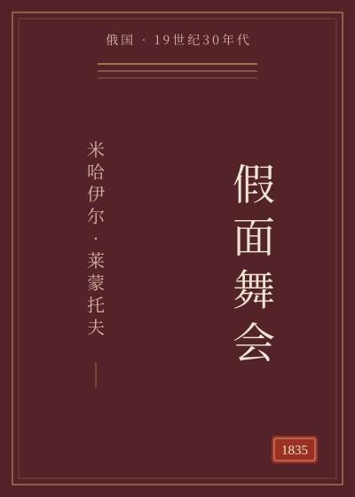
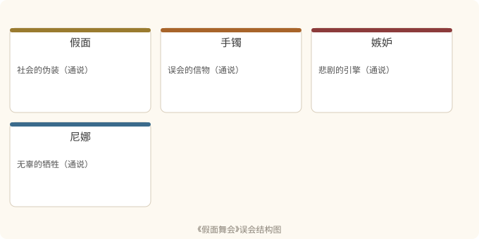

假面舞会
一、基本信息
| 作者 | 莱蒙托夫 |
|---|---|
| 成书/出版 | 作者页注记：Britannica 列举 Masquerade（首演/发表年份通说待核） Mikhail Lermontov — Encyclopaedia Britannica（百科全书） |
| 国别/地区 | 俄国 |
| 时代 | 近代 · 19世纪30年代 |
| 体裁 | 戏剧 |
| 语言 | 俄语 |

《假面舞会》误会结构图（主题·结构图）
二、创作背景
作者页注记：假面舞会——'Britannica 列举'。
Britannica：莱蒙托夫——《当代英雄》作者（作者页语境）。
题材（通说待核）：阿尔贝宁因失落的bracelet而杀妻——嫉妒的悲剧。
三、内容脉络
（通说待核）假面舞会的误会与手镯。
（通说待核）被社会操纵的嫉妒。
四、主要人物表
| 人物 | 身份 | 说明 |
|---|---|---|
| 阿尔贝宁 | 军官 | （通说待核） |
| 尼娜 | 妻子 | （通说待核） |
五、主题与艺术特点
- 嫉妒与猜疑的悲剧（通说待核）。
- 彼得堡上流社会的假面（书名语境——通说待核）。
- 命运的偶然（通说待核）。
六、影响与评论
- Britannica：Masquerade 列举（作者页注记）。
Mikhail Lermontov — Encyclopaedia Britannica（百科全书） - Britannica：莱蒙托夫戏剧序列（作者页语境）。
Mikhail Lermontov — Encyclopaedia Britannica（百科全书）
七、阅读建议
难点
- 19世纪30年代彼得堡沙龙。
- '误会剧'的结构。
- 《假面舞会》中译本（人民文学等——通说待核）。
- 俄文原版（公有领域）。
莱蒙托夫戏剧首选。
八、待核实
- 阿尔贝宁/尼娜人名核对（通说）。
- 1835年写成、禁演史待核。
- 手镯细节待核。